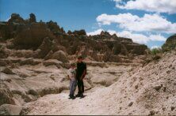

National Park Trip Journal - Week 1
Home :
National Park Trip :
Week 1
Introduction
This is the story of our National Park Trip in the June and July of
1999. This is a transcription of a journal we kept each night along the
way. Each member of the family (Jim [Dad], Anne [Mom], Tommy [age 14]
and Mark [age 12]) took turns writing a day's entry. The text is taken
verbatim from the journal with only spelling and minor grammatical
cleanup. Any more substantial changes or additions are noted.
We hope you enjoy hearing about our trip!
Day 1 - Sunday, June 27
Anne
We're off! We had an inauspicious start, to say the least. We spent
a very busy day on Saturday doing last minute house things and loading
the camper. Jim had just gotten back from his first trip abroad, to
England, on Thursday. I'm sort of glad Mark had not gone to the state
soccer tournament or we'd never be off. Anyway, about 9pm last night we
closed and hitched up the camper
and the lights didn't work. Jim was out there in
the dark with his voltmeter, trying to figure out what was wrong. So
much for our 5 am start.
I was up at 6 am thinking of all that needed to be done. We found an
auto parts store that opened at 8 on Sunday morning. Thank God! We were
off at 11, stopped for lunch on the NY Thruway. We drove all the way to
Niagara Falls--not bad! The boys were good. Mark read Harry
Potter. Tom listened to Sid Fleishman's The Abracadabara Kid.
We pulled into the Cinderella Campground in Grand Island, NY about
8:00. Small campground, not many campers. Setup went fine. We had hot
dogs and salad for dinner, then took a ride to the American Falls. It
was fun to see them lit up in the dark. It was still around 80 degrees
when we went to bed at about 11:00. We had a lot of rain during the
night. A good first day.
Day 2 - Monday, June 28
Mark
I started off pretty good. I ate cereal and then took a shower. We
saw Niagara Falls last night and enjoyed it so much we decided to take a
boat ride on the Maid of the Mist.
The Maid of the Mist was in Canada. We left the
site at 9:10 in the morning. It was only 5 or 6 miles away.
In the boat we first saw the American Falls and then the Canadian
side. The boat got very close to the falls. Luckily they handed out
ponchos. There was a ton of spray. Even though we had ponchos, they
didn't help much. It was awesome looking at it. Dad took some pictures.
When I got off I was amazed how much I was soaked.
After, we got some lunch and headed west. We traveled 8 hours 47
minutes. We set up camp at 9:30 at Augusta, Michigan. Then we went to
bed.
Day 3 - Tuesday, June 29
Tommy
We had a really busy day. When we got up in the morning, we all took
showers, ate breakfast, and packed up. We were out of the campground by
9:00. At about noon, we hit our first time change and switched the
clocks back an hour. After we passed Chicago, at about 1:00, we stopped
at a rest area and ate cold cuts for lunch. Then we basically drove for
five hours straight, only stopping to get gas once.
We crossed the Mississippi at about 5:00. Then we went back across
to our campsite. We had a site right on the river. It was a beautiful
night. The man next to us had some trained birds in his camper. Mark and
I played goalie with the basketball until it fell in the river and I had
to swim downstream and get it.
We had barbequed chicken for supper. Mark and I played soccer with
some younger kids near us. We also had a campfire that I built. I had
some s'mores. Mark and I slept outside. We fought until about 11:00 when
we went to sleep.
Altogether, we went through five states today. They were Michigan,
Indiana, Illinois, Wisconsin, and Minnesota. We had a very busy and fun
day.
Day 4 - Wednesday, June 30
Jim
A loooong day, almost 600 miles, from LaCrosse, Wisconsin to
Badlands National Park. We got out fairly early (for us), 8:15 am. We
had to go all the way across Minnesota
and most of the way across South Dakota, too.
Minnesota was pretty flat, South Dakota a little more rolling. Both gave
horizon to horizon views that were strange to my Eastern eyes. I had the
constant sensation that I was on top of a large hill or
mountain--probably because that's the only time we see to the horizon in
the East. I guess that's what they mean by "Big Sky Country."
We stopped for lunch at the South Dakota border. Only 280 miles to
Badlands!
 We made another stop at the Corn Palace in
Mitchell--a big auditorium decorated inside and out with different color
ears of corn (and other vegatation). That and a grain elevator seem to
be the only things keeping Mitchell from drying up and blowing away.
We made another stop at the Corn Palace in
Mitchell--a big auditorium decorated inside and out with different color
ears of corn (and other vegatation). That and a grain elevator seem to
be the only things keeping Mitchell from drying up and blowing away.
We enjoyed the view at the Missouri River, then gained an hour when
we moved into the Mountain time zone.
When we got to Badlands, we bought our Golden Eagle pass and checked
into the Badlands-Interior Campground in Interior, SD (population 64),
just a mile or two outside the park.
When we set up the camper, we discovered a problem: a couple of
rivets that attach the rail to the bed were sheared. I jury-rigged a bit
for our two nights here, but we're not using the bed. We'll try to stop
in Rapid City to get it fixed.
It's good to be at a real destination! We saw a little of the
Badlands while driving in. They look spectacular. Tomorrow we have the
day to explore.
Day 5 - Thursday, July 1
Anne
What a beautiful day! We hiked a bit in the Badlands.

I did some. I took my cane, which helped. I climbed a 40 foot ladder,
too. The weather was perfect, sunny with a breeze, temps in the 70's and
80's. Unusually comfortable for this time of year.
We had buffalo burgers for lunch. A little well done, but not bad.
We drove out along the Badlands wall. So
many different colors and layers to the formations. We went to a prairie
dog town. They were so cute. Mark looked cute too, trying to take a
picture of one.
Then we drove to Wall, SD and visited Wall Drug.
Back at the campground, the boys took a swim. We relaxed and
visited with our neighbors from Pennsylvania, John and Dani and
their six girls. The three older ones invited Tommy to walk to town with
them and the three younger ones thought Mark was great.
It was a nice day. Pretty country and we're all having fun. We had a
nice steak for dinner. There were wild winds later at night and thunder
and lightning in the distance.
Day 6 - Friday, July 2
Mark
It was an early start. We got up around 6:30 and took down the tent. Our
neighbor Jacque woke up and went to the bathroom. I met her on the way
because I was going to take a shower. When I made it to the bathroom
there was a huge line of people. I decided not to take a shower then. I
ate cereal and juice and then went to take a shower. When I got inside
there were only a few people in line, so I decided to stay. When I got
outside, Jacque, Alex and Jonlyn were waiting for me. I didn't know why
until Jonlyn told me that they might see me at Mt. Rushmore.
When I got back to the campsite, everything was ready. We put the
cooler in the car and left. I said goodbye and we exchanged addresses,
phone numbers and email. When we were in the car I memorized the phone
number and email. It took us 2 1/2 hours to get to our campsite. The
campsite was in Custer State Park.
Before then we had to get the camper fixed because Ma broke the bed.
In Custer it was boring. It was probably because I missed the girls. We
ate our big meal when we got there. We ate chili. It was great. On the
side there was corn and white rice. Even though the chili was good, it
didn't settle that great in my system. We decided to pack up everything
to get an early start for Yellowstone. When that was done, we packed up
bread and turkey for later.
We got in the car and rode to Mt. Rushmore. It took about half an
hour. When I saw it, I was amazed. I had never seen anything so
beautiful. (Before then, we saw Crazy Horse. That was pretty neat. If
that was finished it would be more amazing, but it isn't.) When we got
out of the car it was awesome. It was almost real. The most amazing
thing was the eyes. They looked so real.
We decided to stay until the lighting ceremony was over. We went to
the visitors center to wander around. Then we watched a 13 minute video.
After the video, I went to the gift shop. There was only screwed up
stuff, but I ended up getting a pin. I was guessing Mom was waiting for
me, so I went back to the center. I was wrong, so I wandered a little
and came back.
When I came back, we decided to take a trail close up to the
mountain. The trail was 0.6 miles long. On e the trail were some messed
up kids. The went off the trail and climbed rocks. We came to a clearing
and took a picture. I ran the rest of the way. Dad and Tom were way
behind me.
By then, there was fog building up. When Tom and Dad came, we went
to the car to eat. We had turkey roll-ups. They were good. Then we went
back to take a seat. We were half an hour early. Dad said I could wander
around, so I did. I wandered for 15 minutes and then came back. I waved
to Mom. She said that Dad went to look for me. I went and looked for
him. He said we were going home (Ed: because the monument had
disappeared into the fog). I had found my first bear. (Ed: Dad,
because he was grumpy like one.)
We started back to the car, and by golly, our friends were there. We
talked a little and then took pictures. I noticed that Jacque and
Jessica weren't there. John said that Jessica was depressed that there
were no boys at their campground. We said our goodbyes and took off.
The ride back was an hour long. When we got back, we brushed our teeth
and went to bed. I didn't get much sleep because Dad was snoring. Not
only did Dad growl like a bear, he slept like one too.
Day 7 - Saturday, July 3
Tommy
We got up way too early. They got us up at 6:00 in the morning. We had
time for a drink of juice, then we packed up the camper and left. For
the first hour, Mark and I slept. Then I woke up and had a donut and
bagels and cream cheese. When we got into Wyoming, Mom and Dad stopped
to get coffee. Wyoming was a really, really boring state. All you saw
constantly was barren land with scattered oil rigs and cows every couple
of miles.
When Mark woke up he ate breakfast and we listened to a James Bond tape.
A little later we stopped at McDonalds and had a real breakfast. Soon we
reached our first mountain pass at over 9,000 feet! We stopped her and I
played in snow for a couple of minutes.
Mom and Dad didn't want to listen to the tape, so I listened with
headphones. We stopped in Cody, Wyoming at about 3 o'clock. Here, we got
groceries and ate. The burgers were pretty good, and Mark had a steak.
Then we headed to Yellowstone. On the way, we ran into a really
obnoxious car that was going 30 in a 45 mph zone. Finally, he pulled of
and we went on our way.
We got into Yellowstone at about 5 o'clock. It took another hour and a
half to get to our campground. We were delayed another half hour when
Mark spotted an elk and we had to stop. (I wouldn't have put this in,
but Mark made me.) We got to our site at 7 o'clock. They made us move
all of our food, dishes and smelly items into the car because of all the
bears in the area.
We then set up camp. Mom and Dad set up the camper while Mark and I set
up the tent. Our campsite was really nice. The site had a concrete
pull-through for the camper. We had to go down the road and turn around
because the camper was going to be facing the wrong way. We had camp set
up by 7:30.
Then we set up to
eat supper. It was a small one because we had eaten a big lunch. Before
we ate we cleaned out the cooler because half and half had spilled all
over it. I was the unfortunate one who had to scrub everything in the
cooler. Dad was in such a bad mood that we nicknamed him the Bear. Then
we nicknamed Mom Screech Owl. We figured that since we were in
Yellowstone the animal names would be appropriate. For supper we had
grilled cheese and ramen noodles. I liked it a lot, but Mark ate almost
nothing. After supper we cleaned up and Mark worked on his record
breaking journal response (yesterday’s). While he was doing this,
I went to the bathroom, brushed my teeth, and went to bed. I was really,
really tired. When Mark came in he was kind of noisy. I was really tired
and agitated, so I got too mad at him. He mistankenly thought I wanted
him to leave, so he did. He was back in about 5 minutes. Soon after we both
fell to sleep. I was awakened an hour or two later from loud thunder and
lightning. I went to sleep for good. (The record is broken!)
On to Week 2 of the Trip
{kind=link}
{kind=link}
{kind=link}
{kind=link}
{kind=link}
 We made another stop at the Corn Palace in
Mitchell--a big auditorium decorated inside and out with different color
ears of corn (and other vegatation). That and a grain elevator seem to
be the only things keeping Mitchell from drying up and blowing away.
We made another stop at the Corn Palace in
Mitchell--a big auditorium decorated inside and out with different color
ears of corn (and other vegatation). That and a grain elevator seem to
be the only things keeping Mitchell from drying up and blowing away.
{kind=link}
{kind=link}
{kind=link}
{kind=link}
{kind=link}
{kind=link}
{kind=link}